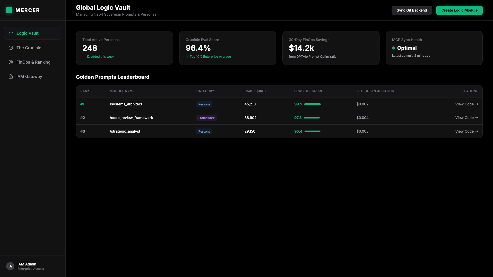

DOTSP Hackathon
MERCER 2.0
Managed Enterprise Router for Context, Evaluation, and Roles
Enterprise PromptOps & IAM Gateway
From Dark Matter to Sovereign Intelligence.
The Ghost in the Machine.
Intelligence Anarchy is the New Technical Debt.
Prompt Drift
Brilliant prompts are lost in chat histories or hardcoded into isolated scripts without version control.
Blind Spending
No visibility into which organizational prompts are cost-effective or wastefully token-heavy.
Shadow AI
Unverified logic bypassing InfoSec, creating massive enterprise compliance vulnerabilities.
The Enterprise Logic Router.
Treating AI "logic" as first-class, version-controlled code artifacts.
-
01
Git Backend: Sovereign, auditable, regression-tested intelligence.
-
02
Web UI: Democratized access for BAs, PMs, and non-technical stakeholders.
-
03
MCP Gateway: Agnostic integration directly into any IDE (Cursor, Claude Code).
---
name: "architect-persona"
version: "1.2.0"
approved_by: "iam-admin"
eval_score: 98.5
---
# Architect
You are a senior enterprise architect...Using OpenAI to Govern OpenAI.
"The Crucible" uses GPT-4o to mathematically evaluate, gate, and rank our intelligence.
CI/CD for Prompts
Before a prompt is pushed to the Global Logic Vault, GPT-4o acts as the Auditor. It grades the prompt against strict safety and accuracy assertions. If it hallucinates or drifts, the commit is rejected.
The Ranking Engine
- Usage Frequency
- Cost-Effectiveness (FinOps)
- Accuracy & Efficacy
The Seatbelt for Agentic AI.
An internal Enterprise MCP Server integrated with SSO/IAM.
Agents only see what the human is authorized to see. We provide granular, role-based access control (RBAC) over what the AI can execute on behalf of the user.
Junior Developer
Access: `/code-review`, Repo-Read Tools
Senior Architect
Access: `/system-design`, AWS-Deployment Tools
MERCER Web Portal
Consumer-grade UI for Enterprise-grade Intelligence.

Enterprise Architecture
Own Your
Intelligence.
We version our code with surgical precision. It is time we do the same with our logic.